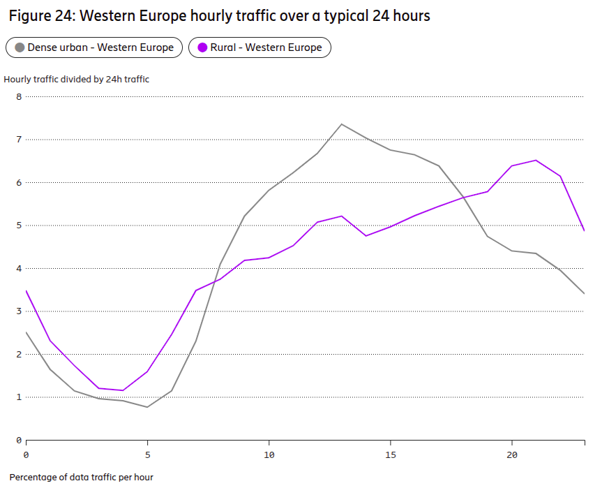
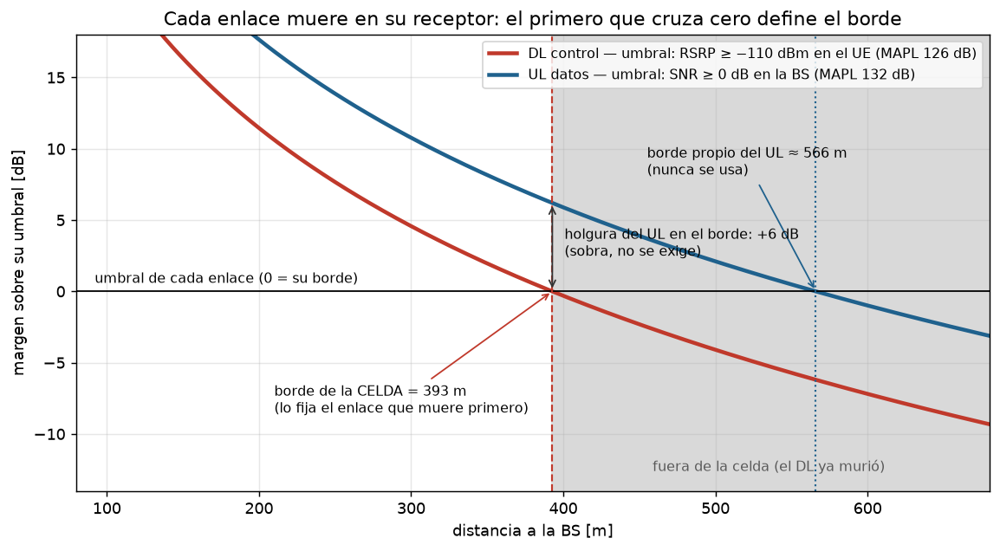

Sesión 07 — Diseño de red de acceso 4G/5G sobre una ciudad real
- Vídeo - Parte 1 Fecha: Agosto 04
- Vídeo - Parte 2 Fecha: Agosto 12
Página en construcción — se escribe fase por fase junto con el notebook
design.ipynb(Fases 0–6 listas; falta el cierre).
Cómo correr el notebook del ejercicio
- Abrir design.ipynb en Colab.
- Activar GPU: Entorno de ejecución → Cambiar tipo de entorno → T4 GPU.
- Ejecutar todo. La primera celda instala Sionna RT y descarga el mapa del curso sola.
Si te asignaron otro mapa (p. ej. miraflores): en la primera
celda cambia la única variable — ESCENA = "miraflores" — y ejecuta
todo; el mapa se descarga automáticamente del sitio del curso.
Objetivos de Aprendizaje
Al finalizar esta sesión, el estudiante será capaz de:
- Traducir metas de negocio en requisitos técnicos medibles de una red de acceso (cobertura, calidad, capacidad, servicios).
- Ejecutar el flujo profesional de diseño de RAN: espectro → dimensionamiento por cobertura → dimensionamiento por capacidad → plan nominal → planificación detallada → validación.
- Justificar la elección de bandas 4G/5G según penetración, radio de celda y capacidad, sobre geometría urbana real.
- Configurar y defender los parámetros que consumen los procedimientos de red: PCI, RACH, tracking areas, vecindades y umbrales de handover.
- Validar un diseño con ray tracing (Sionna RT) sobre un escenario real y cerrar el lazo de optimización.
Siglas y símbolos de la sesión (referencia rápida)
Cada término se explica en su primer uso; esta tabla es el respaldo para lectura no lineal.
| Sigla / símbolo | Significado |
|---|---|
| UE / BS, gNB | User Equipment (el teléfono) / estación base (en 5G: gNB) |
| DL / UL | downlink (bajada, BS→UE) / uplink (subida, UE→BS) |
| TDD / FDD | duplexación por división de tiempo / de frecuencia |
| SCS | subcarrier spacing — separación entre subportadoras OFDM (aquí 30 kHz) |
| CP | prefijo cíclico del símbolo OFDM (Sesión 03) |
| RE / PRB | resource element (1 subportadora × 1 símbolo) / physical resource block (12 subportadoras) |
| EPRE | energy per resource element — potencia por RE |
| RSRP / RSRQ / RSSI | potencia de la señal de referencia / su versión relativa / potencia total recibida |
| SNR / SINR | señal-a-ruido / señal-a-(interferencia+ruido) |
| NF | noise figure — figura de ruido: cuánto ruido agrega el propio receptor |
| MAPL | maximum allowable path loss — pérdida máxima admisible del trayecto |
| PL / UMa / NLOS | path loss / modelo urbano-macro del 3GPP / sin línea de vista |
| σ, n | desviación del shadowing (dB) / exponente de propagación |
| SE | eficiencia espectral (bit/s/Hz) |
| OH | overhead — fracción de espectro gastada en señalización |
| MCS | modulation and coding scheme — la pareja modulación+código que el scheduler elige según el SINR |
| SISO / MIMO | una antena por extremo / múltiples (Sesión 06) |
| dBi | ganancia de antena en dB respecto a la isotrópica |
| SSB, PSS/SSS, PBCH/MIB, SIB | bloque de sincronización y sus partes: señales de sincronía primaria/secundaria, canal broadcast con la información mínima/del sistema |
| PCI | physical cell identity (0–1007) |
| RACH / PRACH / ZC / N_CS | acceso aleatorio / su canal físico / secuencias Zadoff–Chu / separación mínima entre preámbulos |
| RRC / NAS | señalización de radio (UE↔gNB) / de red (UE↔núcleo) |
| AMF / SMF / UPF | nodos del núcleo 5G: movilidad y acceso / gestión de sesiones / plano de datos de usuario |
| TA | según contexto: timing advance (avance temporal, Msg2) o tracking area (§5.4) |
| A3 / TTT | evento de handover "la vecina supera a la serving" / time-to-trigger, su temporizador |
| ANR | automatic neighbour relations — llenado automático de listas de vecinas |
| ICIC | coordinación de interferencia entre celdas (§Fase 0, R1) |
| eMBB / VoNR | banda ancha móvil mejorada / voz sobre NR |
| SON | self-organizing networks — el lazo de optimización en operación continua |
| p5, p50 | percentiles 5 y 50 (mediana) de una distribución |
El proyecto
Un operador móvil te contrata para diseñar su red de acceso 5G en un polígono de San Isidro, Lima — 1.32 × 0.83 km del distrito financiero. Tienes licencia de 100 MHz en la banda n78 (3.5 GHz), azoteas disponibles y un presupuesto limitado de sitios — todo fijado en los términos de referencia del contrato. La publicidad que la empresa quiere poder cumplir:
"Videollamadas nítidas y tu oficina en la nube, en todo San Isidro."
Todo lo que sigue en esta sesión es resolver ese proyecto con método.
Los mapas los proporciona el curso
El laboratorio corre sobre mapas 3D reales construidos desde OpenStreetMap (el del proyecto: San Isidro). El curso los publica listos — no necesitas fabricar nada para el ejercicio. Si te interesa cómo se fabrican (o quieres crear el de tu distrito como extensión): Guía: crear tu escena OSM con Blender (video del proceso).
Fase 0 — Requisitos: el diseño empieza en números, no en antenas
Un requisito de red vale solo si es medible. "Buena cobertura" no es un requisito; "RSRP ≥ −110 dBm en el 95% del área" sí, porque se puede verificar con un mapa o un drive test y se puede firmar en un contrato.
0.1 Las tres métricas que gobiernan los requisitos de radio
- RSRP (Reference Signal Received Power): potencia recibida de la señal de referencia de la celda — en 5G, del SSB, el bloque de sincronización que la celda difunde periódicamente haya o no datos. Mide cobertura de control: ¿el UE encuentra la red y puede engancharse a ella? No dice nada de interferencia.
- SINR: señal sobre interferencia más ruido. Mide calidad de datos: ¿la señal sirve para transportar bits? Se puede tener RSRP excelente con SINR pésimo — típico en frontera de dos celdas sin coordinación.
- RSRQ (Reference Signal Received Quality): híbrido que relaciona RSRP con la potencia total recibida; útil para decidir handovers cuando RSRP solo no discrimina.
La pareja RSRP/SINR separa dos preguntas de diseño distintas: cobertura (Fase 2) y calidad/capacidad (Fase 3). Confundirlas es el error clásico.
¿Y cuánto RSRP es "suficiente"? La convención de la industria (la misma que usa un drive test) clasifica así:
Tabla 0.1 — Rangos de RSRP y calidad de servicio esperada (convención de drive test)
| RSRP (SSB) | Calidad | Qué esperas en ese punto |
|---|---|---|
| ≥ −80 dBm | Excelente | modulación máxima, throughput pico |
| −80 a −90 dBm | Buena | servicio pleno sin restricciones |
| −90 a −100 dBm | Regular | el servicio funciona, el throughput empieza a caer |
| −100 a −110 dBm | Débil | borde de servicio: handovers frecuentes, datos lentos |
| < −110 dBm | Sin servicio confiable | el UE pierde sincronización y el acceso falla |
El umbral de −110 dBm que usan los requisitos no es arbitrario: por debajo, los canales de control (los que el UE necesita para engancharse y mantenerse en la red) dejan de decodificarse con fiabilidad — está unos dB sobre la sensibilidad del receptor, como margen. Por eso R2 se llama cobertura de control: garantiza que la red existe para el UE, no que sea rápida. La rapidez la gobiernan SINR y throughput (R3, R4).
¿Y con qué probabilidad se exige ese umbral? Al 100% del área, nunca: la Sesión 01 mostró que la señal urbana es una variable aleatoria — el shadowing log-normal hace que dos esquinas a la misma distancia de la BS difieran 10–20 dB — y cada punto porcentual final cuesta más que todos los anteriores. Por eso la industria diseña a probabilidad, y para el control la exige alta — típicamente 95% del área — porque quedarse sin red es la falla más grave que existe para el usuario. El precio se paga en el link budget como margen de shadowing (Fase 2).
Nota de profundización
La mecánica completa de las tres métricas — dónde viven en la grilla tiempo-frecuencia, el patrón de señales de referencia, EPRE, el techo estructural del RSRQ y las trampas de medición — está en RSRP, RSRQ y SINR — nota de referencia. Aquí basta el nivel conceptual; la Fase 2 recurre a esa nota para calcular.
0.2 Umbral de SINR para servicios de datos
La Tabla 0.1 respondió "¿hay red?"; falta "¿la señal sirve?". El puente entre SINR y bits es la eficiencia espectral — cuántos bits por segundo transporta cada hertz de espectro — cuyo techo da Shannon:
El punto de referencia que hay que memorizar: SINR = 0 dB (señal igual a interferencia más ruido) da SE ≈ 1 bit/s/Hz. Con una tajada modesta del canal — digamos 10 de los 100 MHz — eso ya son ~10 Mbps: suficiente para un stream HD. Por debajo de 0 dB la eficiencia colapsa exponencialmente y aparecen los "cortes". La clasificación de planificación:
Tabla 0.2 — Rangos de SINR y calidad de datos esperada (valores de planificación)
| SINR | Calidad | Qué esperas en ese punto |
|---|---|---|
| ≥ 20 dB | Excelente | modulaciones altas (256-QAM), SE ≈ 6–8 bit/s/Hz, throughput pico |
| 13 a 20 dB | Buena | throughput alto sostenido, SE ≈ 4–6 |
| 0 a 13 dB | Regular | el servicio funciona, SE ≈ 1–4 |
| −5 a 0 dB | Borde de datos | los streams empiezan a cortarse, SE < 1 |
| < −5 dB | Inutilizable para datos | el control aún engancha (R2), los datos no fluyen |
Por eso el umbral convencional de "datos utilizables" en los requisitos es SINR ≥ 0 dB: es la frontera donde la eficiencia espectral todavía sostiene un servicio real. La cadena completa SINR → SE → Mbps por celda se cobra en la Fase 3; la mecánica fina está en De SINR a capacidad — nota de referencia.
La probabilidad que acompaña a este umbral es menor que la del control — típicamente 90% del área contra 95%. La razón: datos degradados son una falla elástica — el buffer del video y el scheduler disimulan huecos breves — mientras que quedarse sin red (§0.1) no tiene disimulo. Los valores exactos los negocia cada contrato (90–95% es el rango urbano usual), pero la práctica consistente de la industria mantiene el orden: la probabilidad de control no baja de la de datos. La traducción exacta oferta → (umbral, probabilidad) es una decisión del diseñador — lo defendible no es el número, es el razonamiento.
0.3 Requisitos de bitrate y latencia por servicio
La oferta comercial habla de servicios ("video sin cortes", "llamadas nítidas"); los requisitos hablan de bits. La tabla que traduce — valores típicos de planificación:
Tabla 0.3 — Servicios y aplicaciones: bitrate y latencia mínimos (valores de planificación)
| Servicio / aplicación | DL por usuario | UL por usuario | Latencia | Lo que manda |
|---|---|---|---|---|
| VoNR (voz sobre NR) | ~0.1 Mbps | ~0.1 Mbps | < 100 ms | latencia y pérdida, no bitrate |
| Video streaming SD (480p) | 1–2 Mbps | — | tolerante (buffer) | bitrate DL |
| Video streaming HD (1080p) | 5–8 Mbps | — | tolerante (buffer) | bitrate DL |
| Video streaming 4K | 15–25 Mbps | — | tolerante (buffer) | bitrate DL |
| Videollamada HD | 2–4 Mbps | 2–4 Mbps | < 150 ms | UL simétrico + latencia |
| Web / redes sociales | 1–5 Mbps (ráfagas) | < 1 Mbps | < 300 ms | percepción de carga |
| Gaming en línea | 1–5 Mbps | 0.5–1 Mbps | < 50 ms | latencia, no bitrate |
| FWA (internet fijo por 5G) | 50–100 Mbps | 10–20 Mbps | tolerante | bitrate sostenido |
El target de borde (R4) y esta tabla
En nuestro proyecto el target viene dado por la guía de planificación del operador: DL = 50 Mbps — la referencia NGMN (§4.1.2) "50 Mbps everywhere", exigible en al menos el 95% de las ubicaciones incluido el borde de celda — y UL = 5 Mbps: el mayor valor de la columna UL entre los servicios ofrecidos (videollamada, 2–4 Mbps) más margen, porque no existe referencia publicada de UL "en todas partes".
El papel de esta tabla es verificar que el target cubre lo ofrecido: el mayor DL entre los servicios de la publicidad queda muy por debajo de 50 ✓. Si la oferta fuera pesada — FWA pide 50–100 Mbps DL y 10–20 UL — la referencia NGMN quedaría corta y el mínimo de la tabla mandaría el target en ambas columnas (p. ej. 100 DL / 20–25 UL). (El aspiracional de largo plazo es ITU-R M.2410 §4.3: 100 DL / 50 UL en urbano denso.)
¿Y por qué el target no se calcula de la demanda? Porque necesitarías cuántos sitios y celdas tendrá la red — el resultado del diseño (Fases 2–4), no un dato de la Fase 0. R4 se recibe/adopta; R5 se calcula de los TdR (§0.4).
En la práctica: ¿quién fija este número?
El planificador de radio casi nunca lo fija — lo recibe, en este orden de fuerza: obligaciones del regulador → definición de producto del operador → guía interna de planificación (los perfiles de servicio que traen herramientas como Atoll o Planet). Este procedimiento de §0.3 es el que ejecuta la oficina técnica del operador una vez, al escribir esa guía — en el curso te toca ese rol porque no hay nadie que te la herede.
Y en el Perú la oferta comercial no es solo marketing — es exigible:
- La Ley N° 31207 (vigente desde dic. 2022) obliga a garantizar al menos el 70% de la velocidad contratada, en bajada y en subida; OSIPTEL la monitorea mediante el registro RENAMV. Ojo con la lectura: la ley no fija un valor absoluto (no dice "50 Mbps") — fija un porcentaje de lo que tú ofreciste. Qué ofrecer sigue siendo decisión del operador, y por eso traducir la publicidad a números verificables — la Fase 0 entera — es una obligación legal, no un ejercicio de aula.
- La subasta de la banda 3.5 GHz — la banda de este proyecto, en bloques de 100 MHz — se adjudicó con compromisos de despliegue en sedes concretas (estadios, universidades, centros de salud).
- El MTC propone medir la cobertura 4G en carreteras con el criterio RSRP ≥ −110 dBm — el mismo umbral de control de la Tabla 0.1 y de R2.
La latencia no la mide el trazador
Bitrates y
SINR se cobran en la Fase 6 con mapas; la latencia y la prioridad de VoNR
se garantizan por arquitectura y QoS (colas 5QI en el gNB y el core). Por
eso R6 existe como requisito pero no aparece en el REQ del notebook —
no hay mapa que lo verifique.
0.4 De GB por mes a Mbps de hora cargada
La capacidad no se dimensiona para el promedio del día sino para la hora cargada (busy hour). La conversión estándar:
donde \(V_{\text{mes}}\) es el volumen mensual por abonado (bits) y \(f_{BH}\) la fracción del tráfico diario que cae en la hora cargada. Para \(f_{BH}\) no hay valor normado — es una hipótesis que el diseñador declara, pero está bien acotada: si el día fuera uniforme, una hora llevaría \(1/24 \approx 4\%\) del tráfico; y la medición real del Ericsson Mobility Report (jun. 2023, Fig. 24, Europa Occidental) muestra la hora pico llevando ~7% del tráfico diario en denso urbano (mediodía) y ~6% en rural (noche, empujada por FWA). La hipótesis usual de planificación, 8–12%, queda deliberadamente por encima de lo medido: es colchón de crecimiento. (El marco formal para medir la hora cargada es la recomendación ITU-T E.500.)

Figura: tráfico por hora dividido entre el tráfico de 24 h, Europa Occidental. Fuente: Ericsson Mobility Report, jun. 2023, Fig. 24.
Ejemplo con números de Perú urbano: 10 GB/mes ≈ \(2.7\) Gbit/día; con \(f_{BH} = 10\%\) → ~74 kbps sostenidos por abonado (Tabla 0.4). Parece poco — esa es la magia de la multiplexión estadística: miles de usuarios que navegan a ráfagas comparten la celda, y el diseñador dimensiona la suma, no los picos individuales.
La fórmula, tabulada para volúmenes típicos y el rango usual de \(f_{BH}\) (todas las celdas salen de la ecuación de arriba):
Tabla 0.4 — Tasa media por abonado en hora cargada, \(R_{usuario}\) en kbps (calculada de la fórmula de esta sección)
| \(V_{mes}\) | \(f_{BH}=8\%\) | \(f_{BH}=10\%\) | \(f_{BH}=12\%\) |
|---|---|---|---|
| 5 GB/mes | 29.6 | 37.0 | 44.4 |
| 10 GB/mes | 59.3 | 74.1 | 88.9 |
| 12 GB/mes | 71.1 | 88.9 | 106.7 |
| 20 GB/mes | 118.5 | 148.1 | 177.8 |
| 30 GB/mes | 177.8 | 222.2 | 266.7 |
0.5 Requisitos del proyecto
Tabla 0.5 — Requisitos del proyecto (R1–R8): meta y método de verificación
| # | Requisito | Meta | Se verifica con |
|---|---|---|---|
| R1 | Área de servicio | polígono de 1.1 km² (San Isidro) | — |
| R2 | Cobertura de control | RSRP ≥ −110 dBm en 95% del área | mapa RSS / drive test |
| R3 | Calidad de datos | SINR ≥ 0 dB en 90% del área | mapa SINR |
| R4 | Throughput de borde | p5 ≥ 50 Mbps DL, ≥ 5 Mbps UL | mapa de throughput |
| R5 | Capacidad agregada | ≥ 600 Mbps/km² en hora cargada | Fase 3 |
| R6 | Servicios | eMBB + VoNR, latencia de usuario < 20 ms | arquitectura/QoS |
| R7 | Espectro | 100 MHz TDD en n78 (3.5 GHz) | licencia (MTC) |
| R8 | Despliegue | solo azoteas existentes, máximo 6 sitios | plan nominal |
Los ocho nacen aquí — son el contrato — pero se trabajan distinto. R2 a
R5 se calculan o fijan en esta fase con las secciones 0.1–0.4, y las
fases de diseño los satisfacen y verifican. R1, R7 y R8 son datos del
contrato que se registran tal cual: la Fase 1 desarrolla las
consecuencias de R7 (TDD, numerología, PRBs) y las Fases 2 y 4 respetan
R8 (potencia en el link budget, sitios en el plan). R6 se declara y
se hereda: lo garantiza la arquitectura/QoS, no un mapa de radio — por
eso es el único que no entra al diccionario REQ del notebook.
Notación de R4: p5 = percentil 5 de la distribución de throughput sobre el área — el valor que el 95% de los puntos supera. Es la forma estadística de decir "throughput de borde garantizado": el borde de celda es la cola baja de la distribución. Mismo espíritu probabilístico que el 95% de R2 y el 90% de R3.
El cálculo detrás de R5: 25 000 personas/km² presentes en hora cargada (distrito financiero) × 30% de participación de mercado × 74.1 kbps por abonado (Tabla 0.4: fila 10 GB/mes, \(f_{BH}=10\%\)) ≈ 556 Mbps/km², redondeado al centenar superior → 600. Cada factor es una hipótesis de negocio — cámbialos y cambia la red que hay que construir.
Comprueba tu comprensión
P1. ¿Puede un punto del mapa cumplir R2 e incumplir R3 a la vez? ¿Qué lo causaría?
P2. Si el market share sube al 45%, ¿qué requisitos cambian y qué fases del diseño hay que rehacer?
R1. Sí: RSRP alto con SINR bajo — señal fuerte pero interferida, típico en fronteras de celda. Se cura con coordinación/tilts, no con más potencia.
Ojo con la palabra coordinación: la intuición sugiere "que las celdas se turnen" — desalinear los patrones TDD para que el DL de una no coincida con el DL de la vecina. La figura muestra por qué eso es exactamente lo prohibido:

Si B se desplaza dos slots, aparecen slots donde A transmite DL (~46 dBm, en azotea, casi línea de vista hacia la otra azotea) mientras B intenta recibir UL de UEs que le llegan a ~−120 dBm: la cross-link interference entre gNBs deja ciego al receptor en toda la celda, no solo en el borde. Por eso todas las celdas co-canal usan el mismo patrón DDDSU sincronizado — es requisito regulatorio en la banda, no una opción de diseño.
La coordinación que sí cura el borde opera con la trama ya sincronizada, en los ejes de frecuencia y scheduling (ICIC): las vecinas acuerdan sub-bandas de borde disjuntas — A sirve a sus UEs de frontera en unos PRBs, B en otros, y el centro reusa todo. El UE de borde recibe su señal donde la vecina no transmite a plena potencia → baja I sin tocar la potencia total. El tilt (Fase 4) ataca lo mismo por el eje espacial.
R2. Cambia R5 (∝ abonados). La cobertura (Fase 2) no se toca; el dimensionamiento por capacidad (Fase 3) y quizá el plan nominal (más sectores/sitios) sí.
Fase 1 — Estrategia de espectro
Antes de colocar un solo sitio hay que decidir en qué frecuencia vive la red. Es la decisión más estructural del diseño: fija el radio de celda (y por tanto cuántos sitios costará la cobertura), la penetración en interiores y cuánta capacidad hay para vender. En nuestro proyecto la licencia ya está dada (R7: 100 MHz en n78) — pero hay que entender qué compramos y qué no.
1.1 Frecuencia y alcance: efecto en el radio de celda
La pérdida de espacio libre crece con \(20\log_{10}(f)\): subir de banda cuesta dB, y esos dB se pagan en radio de celda. Además, a mayor frecuencia peor difracción (las esquinas "doblan" menos la señal) y peor penetración de muros. Regla mental honesta: en espacio libre (\(n=2\)) bajar una octava dobla el radio; en urbano denso (\(n \approx 3.8\)) la misma octava rinde solo ×1.4 — el exponente alto "amortigua" la ventaja de bajar de banda (la tabla siguiente usa el \(n\) urbano: por eso 700↔3500, que son 2.3 octavas, da ×2.3 y no ×5).
Con el exponente de propagación urbano (\(n \approx 3.8\)), el delta de pérdida se convierte en radio de celda — y el radio, en sitios. Las tres fórmulas de la cadena:
donde \(f\) es la frecuencia de la banda candidata y \(f_{ref}\) la de referencia. La primera es el término de frecuencia de la pérdida de propagación: a distancia igual, subir de banda cuesta \(\Delta\) dB. La segunda sale de mantener fijo el presupuesto del enlace (MAPL): los dB que la banda regala (o cobra) los absorbe el término de distancia \(10\,n\log_{10}(r)\), así el radio crece o se encoge. La tercera es geometría: para tapar la misma área con celdas de radio \(r_{rel}\) relativo hacen falta \(1/r_{rel}^2\) sitios — el área de cada celda escala con el cuadrado del radio.
Tabla 1.1 — Bandas candidatas frente a n78: pérdida, radio y sitios relativos (\(n = 3.8\))
| Banda | \(\Delta\) pérdida vs n78 | Radio relativo | Sitios para la misma área |
|---|---|---|---|
| 700 MHz (n28) | −14 dB | ×2.3 | ÷5.4 |
| 2.1 GHz (B4/n1) | −4.4 dB | ×1.3 | ÷1.7 |
| 3.5 GHz (n78) | 0 (referencia) | ×1.0 | ×1.0 |
| 26 GHz (n258) | +17.4 dB | ×0.35 | ×8 |
Ya lo medimos sobre Lima real: mismos 3 sitios a 2.1 GHz cubren 74.6% del
área; a 3.5 GHz, 71.2% (test_scene.ipynb, Parte 5) — y eso que 2.1→3.5 es
el salto chico de la tabla.
1.2 Bandas de 5G y capas de espectro
Porque el alcance se paga en capacidad: en low-band hay poco espectro (10–20 MHz por operador, y repartido); en mid-band hay bloques de 80–100 MHz. De ahí la arquitectura de capas que usa todo operador real:
- Capa de cobertura (700/850/900 MHz): llega lejos y adentro, pero la banda entera de 700 MHz es 2×45 MHz (FDD) repartidos entre operadores — en la subasta peruana de 2016 tocó 2×15 MHz por operador, o sea 15 MHz de bajada → sostiene voz, IoT y el "siempre conectado", no el tráfico masivo.
- Capa de capacidad (2.6/3.5 GHz): bloques de 80–100 MHz por operador (nuestro proyecto: 100 MHz en n78, R7) — unas 6–7× la bajada de la capa baja → sostiene el tráfico eMBB; celdas chicas → más sitios.
- Capa de hotspot (mmWave): n258 (26 GHz) tiene 3.25 GHz de banda total; se asigna en portadoras de 400 MHz y un operador típicamente agrega 800–1000 MHz — otras 8–10× lo de mid-band, pero con alcance de cuadra; solo donde la densidad lo justifica.
Tabla 1.2 — Franjas de espectro y rangos de frecuencia 3GPP
| Franja | Rango | Ejemplos | En 3GPP |
|---|---|---|---|
| Low-band | < 1 GHz | 700 MHz (n28), 850, 900 | FR1 |
| Mid-band | 1–7 GHz | 1.9 GHz, AWS, 2.6, 3.5 GHz (n78) | FR1 |
| High-band (mmWave) | 24–52 GHz | 26 GHz (n258), 28 | FR2 |
FR1 agrupa low + mid (hasta 7.125 GHz); FR2 es el mundo milimétrico. La "C-band" de la prensa técnica es el nombre histórico satelital de 3.3–4.2 GHz — el pedazo de mid-band donde vive n78.
Nuestro proyecto es deliberadamente mono-capa (solo n78): más simple para aprender, y realista para un despliegue 5G inicial. La comparación con una capa de 700 MHz queda como extensión (requiere escena de 3×3 km — una celda low-band tapa nuestra escena entera).
1.3 Reparto TDD del canal
n78 es TDD (Sesión 06: subida y bajada alternan sobre la misma frecuencia). El tiempo se reparte con un patrón de slots; el típico en n78 es DDDSU: de cada 5 slots, 3 son de bajada, 1 "especial" (mayormente bajada + guarda) y 1 de subida. Consecuencia aritmética que golpea el diseño:
- DL dispone de ≈ 71% del tiempo → ≈ 71 MHz "efectivos" de los 100.
- UL dispone de ≈ 20% → ≈ 20 MHz efectivos — y el UE ya era el extremo débil (23 dBm). El uplink pierde dos veces: en potencia y en tiempo.
¿De dónde salen el 71% y el 20%? De contar símbolos. Cada slot tiene 14 símbolos OFDM. En DDDSU hay 3 slots D (42 símbolos de bajada), 1 slot U (14 de subida) y 1 slot S cuya partición interna es configurable — este curso la declara 8 símbolos DL + 6 de guarda (la guarda le da tiempo al UE para conmutar de recibir a transmitir):
Con otra partición de S salen otras fracciones — por eso se declara.
El patrón TDD además debe estar sincronizado entre operadores vecinos de la banda (lo coordina el regulador): si mi celda transmite DL mientras la tuya escucha UL, mi potencia entierra a tus usuarios.
En FDD (las bandas bajas clásicas) esto no existe: DL y UL tienen cada uno su frecuencia dedicada, tiempo completo.
1.4 Numerología y bloques de recursos del canal
Las numerologías de NR son una familia cerrada: \(SCS = 15 \cdot 2^{\mu}\) kHz. En FR1 las opciones son tres, y la pareja banda + ancho de canal decide sola:
Tabla 1.3 — Numerologías FR1 frente a un canal ancho de n78 (TS 38.101-1, Tabla 5.3.2-1)
| SCS | Canal máximo del estándar | Veredicto para mid-band |
|---|---|---|
| 15 kHz (µ=0) | 50 MHz (270 PRB) | un canal de 80–100 MHz ni existe — exigiría dos portadoras agregadas |
| 30 kHz (µ=1) | 100 MHz (273 PRB) | el estándar de mid-band: llena el canal con CP de 2.3 µs |
| 60 kHz (µ=2) | 100 MHz (135 PRB) | CP a la mitad (~1.2 µs) sin ganancia a cambio en FR1 |
En n78 queda 30 kHz (Sesión 03: µ=1): slots de 0.5 ms, CP de 2.3 µs — y ya
verificamos sobre Lima que el delay spread urbano (mediana 60 ns) cabe
holgado en ese CP (test_scene.ipynb, Parte 8). La numerología la fijan
banda y estándar; no es un parámetro que el diseñador pueda ajustar.
De los MHz del canal a los PRB. El ancho licenciado no se transmite completo: el estándar reserva una banda de guarda a cada borde del canal (para cumplir la máscara de emisión — los lóbulos OFDM no caen en seco), tabulada en TS 38.101-1, Tabla 5.3.3-1, según ancho y SCS. El método, válido para cualquier canal:
donde \(g\) es la guarda de la tabla y \(12 \cdot SCS\) el ancho de un PRB (con 30 kHz: 360 kHz). Para nuestro canal de 100 MHz, \(g = 0.845\) MHz → \(BW_{tx} = 98.31\) MHz → 273 PRB (utilización 98.3%). El resultado coincide con la Tabla 5.3.2-1 del estándar — que es el contraste obligatorio del cálculo.
Decisión de la Fase 1 (lo que hereda el resto del diseño)
Banda n78 (3.5 GHz), 100 MHz TDD con patrón DDDSU (≈71/20% DL/UL), SCS 30 kHz. La Fase 2 dimensionará cobertura con la física de 3.5 GHz; la Fase 3 repartirá 71/20 MHz efectivos contra la demanda de R5.
Comprueba tu comprensión
P1. Un colega propone pedir al regulador cambiar la licencia a 20 MHz en 700 MHz "porque cubre 5 veces más área con los mismos sitios". ¿Qué requisito del proyecto mata la propuesta?
P2. ¿Por qué el patrón TDD de tu red no es 100% decisión tuya?
R1. R5/R4: con 20 MHz no hay capacidad ni throughput de borde — la cobertura barata de low-band se paga en Mbps. (Cálculo rápido: 20 MHz × ~74% DL deja ~15 MHz efectivos; ni la mediana de 50 Mbps se sostiene con carga.)
R2. Debe sincronizarse con los demás operadores de la banda en la zona: patrones cruzados = interferencia DL→UL entre redes. Lo fija el regulador o el acuerdo inter-operador.
Fase 2 — Dimensionamiento por cobertura
La pregunta de esta fase: ¿cuántos sitios necesita R2 (RSRP ≥ −110 dBm en 95% del área)? La herramienta es el link budget: una contabilidad en dB donde cada ganancia suma, cada pérdida resta, y lo que queda es cuánto camino puede recorrer la señal.
2.1 Potencia por elemento de recurso: EPRE
Error clásico: arrancar el presupuesto con "la BS transmite 44 dBm". Esos 44 dBm se reparten entre todas las subportadoras del canal. Con 100 MHz a separación de subportadora (SCS) de 30 kHz caben 273 resource blocks (PRB, bloques de 12 subportadoras) — es decir 273 × 12 = 3 276 subportadoras:
¿De dónde salen los 273 PRB?
Del método de §1.4: guardas de la Tabla 5.3.3-1 del estándar → \(BW_{tx} = 98.31\) MHz → 273 bloques de 360 kHz (utilización 98.3%, contra el ~90% fijo de LTE). Ahí están también la familia de numerologías (Tabla 1.3) y por qué el SCS de 30 kHz viene forzado.
Como el RSRP se mide por resource element (ver la
nota de referencia), el link budget de cobertura de
control empieza en 8.8 dBm, no en 44. La red incluso difunde este número
(referenceSignalPower en el SIB) para que el UE pueda despejar el path
loss.
2.2 Presupuesto del enlace de bajada
Tabla 2.1 — Términos del presupuesto de bajada y su origen
| Término | Valor | De dónde sale |
|---|---|---|
| EPRE | 8.8 dBm | 44 dBm ÷ 3 276 subportadoras |
| \(G_{tx}\) | +16 dBi | antena sectorial macro típica |
| \(M_{\text{shadow}}\) | −9 dB | compra el 95% de área con shadowing log-normal \(\sigma = 8\) dB |
| \(G_{rx}\), pérdidas de cuerpo/cable | 0 dB neto | UE: antena ~0 dBi; simplificación explícita |
Despejando: la señal puede perder hasta
MAPL (Maximum Allowable Path Loss) es el número que resume toda la fase: el presupuesto de pérdida que el trayecto no debe superar.
El margen de shadowing es donde la meta probabilística de la Fase 0 se vuelve un número: con \(\sigma = 8\) dB, reservar ~9 dB garantiza que el ~95% del área (no solo el punto medio) quede sobre el umbral. Más probabilidad = más margen = menos radio: la certeza se paga en dB.
¿De dónde salen los 9 dB de \(M_{\text{shadow}}\)? (el cálculo ingenuo da 13.2)
Qué es el shadowing. El modelo de propagación (UMa) predice la pérdida mediana a cada distancia. Pero dos esquinas a la misma distancia difieren según qué edificios estorben el trayecto: esa variación alrededor de la mediana es el shadowing, y medido en dB se comporta como una gaussiana de media 0 y desviación \(\sigma\) (log-normal en potencia). En urbano denso, \(\sigma \approx 6\text{–}10\) dB; usamos 8, el valor de libro. (No confundir con el fast fading multitrayecto, que varía en centímetros y lo absorben HARQ y el scheduler — el shadowing varía en decenas de metros y se paga en link budget.)
El cálculo ingenuo. Si quiero que un punto del borde de celda esté sobre el umbral el 95% de las veces, necesito cubrir el percentil 95 de la gaussiana:
¿Por qué la industria usa ~9? Porque 13.2 dB responde la pregunta equivocada.
La pregunta correcta es de área. R2 pide 95% del área, y el borde es el peor lugar de la celda: todo el interior tiene pérdida menor que la del borde, o sea margen de sobra. Al integrar la probabilidad de cobertura sobre toda la celda (la integral clásica de Jakes, 1974), con \(\sigma = 8\) y exponente de propagación \(n \approx 3.8\), basta que el borde quede cubierto ~86% del tiempo para que el área quede cubierta 95%:
Los ~4.7 dB de diferencia entre 13.2 y 8.5 no son un tecnicismo: en el modelo UMa equivalen a ~27% más de radio, que al cuadrado es ~60% menos sitios por km². Leer bien la letra chica del requisito (¿95% de qué?) es dinero.
La receta para tus propios diseños. Dos tablas y dos pasos:
-
Toma la σ del escenario (misma tabla del 38.901 que el path loss, 7.4.1-1) — o mídela con drive test:
Tabla 2.2 — Desviación del shadowing por escenario (TR 38.901, Tabla 7.4.1-1, y tradición Okumura/COST-231)
Escenario σ_SF UMa LOS 4 dB UMa NLOS 6 dB UMi NLOS 7.8 dB RMa NLOS 8 dB urbano denso (tradición Okumura/COST-231, nuestro caso) 8–10 dB -
Convierte la meta de área a probabilidad de borde (integral de Jakes — el notebook la resuelve numéricamente en 6 líneas) y multiplica: \(M = z_{\text{borde}} \cdot \sigma\). Para σ = 8, n ≈ 3.8, ya resuelto:
Tabla 2.3 — Margen de shadowing según la meta de área (σ = 8 dB, n = 3.8, integral de Jakes)
Meta de área Borde equivalente z M 90% 74% 0.65 5.2 dB 95% 86% 1.06 8.5 ≈ 9 dB 99% 96.5% 1.81 14.5 dB
El error a evitar: entrar a la tabla de z directamente con la meta de área (\(z_{0.95} = 1.645 \to 13.2\) dB) — ese margen responde "95% del borde", una oferta más cara que la que firma el contrato.
El precio sube empinado. 99% de área ya cuesta ~14.5 dB (y 18.6 si alguien lo exige en el propio borde) — la razón por la que ningún operador firma 100%. Y \(\sigma = 8\) es una hipótesis declarada más: el drive test (Fase 6) la mide de verdad para esta ciudad; si San Isidro resulta ser \(\sigma = 10\), el 9 ya no compra el 95%.
2.3 De MAPL a radio: el modelo de propagación
El MAPL se convierte en distancia invirtiendo un modelo. El estándar de la industria cuando aún no se tiene el modelo 3D de la ciudad (o no hace falta) es el UMa NLOS de 3GPP TR 38.901 — un modelo estadístico: resume miles de mediciones de urbanos reales en una fórmula que solo pide frecuencia y distancia. No sabe nada de San Isidro; responde por el "urbano macro promedio". El modelo 3D (nuestra escena OSM) es el insumo de la otra familia — el ray tracing determinístico de las Fases 4 y 6:
Con el MAPL exacto (125.8 dB) y \(f_c = 3.5\): \(d \approx 394\) m — el orden de cientos de metros esperado para una macro de mid-band en urbano denso (la figura de §2.4 lo muestra cruzando su umbral en ~393 m).
Cada sitio trisectorial cubre un hexágono de área \(\approx 2.6\,r^2\):
Tres sitios — coherente con el esbozo (test_scene.ipynb) que con 3 BS
logró ~71% de SINR > 0: la cobertura de control alcanza, la calidad todavía
no. La fórmula da el orden de magnitud; el ray tracing sobre la escena
real (Fase 6) da la verdad calle por calle. Ambos se necesitan: la fórmula
para dimensionar sin escena, el trazador para validar con ella.
2.4 Presupuesto del enlace de subida
El mismo ejercicio con el UE como transmisor: 23 dBm sobre sus PRBs asignados (no per-RE de 100 MHz — el UE concentra su potencia en pocos PRB, su gran defensa), antena de 0 dBi, y la BS escuchando con figura de ruido (NF) de 5 dB. El enlace que soporte menos pérdida define el radio real de la celda: de nada sirve que el UE oiga a la BS si la BS no lo oye de vuelta.
El término nuevo del cálculo es la sensibilidad del receptor — el mínimo que la BS necesita recibir para demodular:
Término a término: −174 dBm/Hz es el mínimo técnico térmico universal (\(kT\) a 290 K — nadie escucha por debajo de eso); \(10\log_{10}(BW)\) es cuánto ruido entra por la ventana que se escucha; \(NF\) la suciedad que el propio receptor agrega; \(SNR_{min}\) lo que el demodulador exige sobre el ruido. Con la asignación de 5 MHz y una meta modesta (\(SNR_{min} = 0\) dB):
Aquí está la física de la "gran defensa": la sensibilidad mejora con
\(10\log_{10}\) del ancho escuchado. Transmitir en 5 MHz en vez de 100 baja
el mínimo técnico de ruido de la BS en \(10\log_{10}(20) = 13\) dB — la concentración
de PRBs no es un truco de potencia, es un truco de ruido. Resultado
con nuestros números: 132 dB de UL contra 126 del DL de control — el
enlace limitante aquí es el DL, al revés del folclor "el uplink siempre
limita" (que sí aplica cuando se piden muchos Mbps de subida: más PRBs →
más BW → sensibilidad peor → MAPL cae). El cálculo ejecutable está en
design.ipynb.
¿Por qué justo 5 MHz asignados al UE? (y por qué no darle más)
El 5 MHz no es un valor arbitrario: sale del requisito R4-UL. La oferta de borde es 5 Mbps de subida, y a \(SNR_{min} = 0\) dB la eficiencia espectral es \(SE = \log_2(1+1) \approx 1\) bit/s/Hz:
¿Y por qué no darle más PRBs al pobre UE de borde? Porque su potencia es fija (23 dBm): cada PRB extra diluye la densidad espectral transmitida, mientras el ruido que la BS escucha crece con \(10\log_{10}(BW)\). Duplicar el ancho regala +3 dB de capacidad potencial y cobra −3 dB de SNR — que en el borde, pegado al mínimo, no tienes. Es un óptimo con joroba:
- Menos de 5 MHz → SNR sobrado, pero el techo \(BW \times SE\) no llega a los 5 Mbps ofrecidos.
- Más de 5 MHz → el SNR de borde cae bajo 0 dB, la SE se desploma, y pierdes por el otro lado.
El par (5 MHz, 0 dB) es el punto autoconsistente: el ancho mínimo que cumple la meta, evaluado al SNR que ese mismo ancho sostiene a 132 dB de pérdida. En la red real esto no se congela: el scheduler y el power control lo negocian por milisegundo (UE de borde → pocos PRBs a potencia máxima; UE cercano → muchos PRBs). El dimensionamiento congela el caso de borde porque es el que firma R4.
¿Y por qué SNR_min = 0 dB y no otro punto? Ningún requisito fija los 5 MHz: R4 solo fija el producto \(BW \times SE(SNR_{min}) = 5\) Mbps. Un grado de libertad — y estos son los otros repartos del mismo requisito, con los mismos 23 dBm del UE (fijos en los tres casos: el UE de borde ya está a máxima potencia; la moneda del trade-off no es potencia, es alcance):
Tabla 2.4 — El mismo requisito R4-UL con tres repartos BW/SNR (P_UE fija)
| Elección | BW necesario | Sensibilidad BS | MAPL_UL |
|---|---|---|---|
| SNR_min = +10 dB | 1.45 MHz | −97.4 dBm | 127.4 dB (−4.6) |
| SNR_min = 0 dB | 5 MHz | −102 dBm | 132 dB |
| SNR_min = −10 dB | 36.4 MHz | −103.4 dBm | 133.4 dB (+1.4) |
La explicación en versión subibaja: en el presupuesto restan dos términos atados — el ruido que entra por la ventana (\(10\log_{10} BW\)) y lo que exiges sobre el ruido (\(SNR_{min}\)); la oferta de 5 Mbps hace que bajar uno suba el otro. Por debajo de 0 dB, cada dB de SNR que perdonas se devuelve casi exacto en ruido extra (el BW crece rápido): empate — por eso −10 dB solo gana 1.4 dB, y a cambio secuestra 36 MHz de PRBs para un usuario y exige MCS que apenas existen. Por encima de 0 dB, cada dB que exiges no se compensa con el poco BW que ahorras (la SE crece solo logarítmicamente): pérdida neta — +10 dB cuesta 4.6 dB de alcance. 0 dB es el codo de la curva: capturas el plateau sin pagar los extremos. Ese es el "por experiencia de diseño" de la industria, puesto en números.
Letra chica declarada: \(SE = 1\) a 0 dB es Shannon puro; con MCS reales es ~0.8–0.9, así que 5 MHz queda un pelo optimista — tolerable porque el UE de borde rara vez sostiene los 5 Mbps continuos.
¿Mínimo, promedio o peor caso? Ninguna de las dos primeras: el mínimo asignable es 1 PRB (360 kHz — y con él el enlace cierra aún más lejos, pero no salen 5 Mbps), y no hay promedio de nada. Es el peor caso del servicio ofrecido: peor ubicación (el borde, a MAPL) × el contrato (R4-UL). El presupuesto responde "¿hasta dónde cumplo la oferta completa?", no "¿hasta dónde hay señal?".
¿Y el canal de control, no habría que garantizarlo con el peor caso? Ya está garantizado dos veces: el control de subida (PUCCH) ocupa ~1 PRB — concentración máxima, MAPL mejor que los 132 dB de datos; si los datos cierran, el control UL cierra con margen. Y el control de bajada (SSB/RSRP, R2) es el presupuesto de 126 dB — que resultó el limitante de toda la red. Jerarquía completa: \(\text{MAPL}_{ctrl,UL} > \text{MAPL}_{datos,UL} (132) > \text{MAPL}_{ctrl,DL} (126)\). La cobertura es una cebolla: el anillo exterior donde apenas "hay red" (1 PRB, kbps), y anillos interiores donde cada servicio ofrecido se cumple — el radio de diseño es el del anillo del contrato.
La imagen que resume los dos enlaces y sus umbrales:

Lectura en una regla: cada enlace muere donde su curva cruza su propio umbral, medido en su receptor (DL: RSRP en el UE; UL: SNR en la BS). El primero que cruza define el borde de la celda; el otro llega con holgura — aquí el DL muere primero (393 m) y al UL le sobran 6 dB que nadie exigió.
2.5 De RSS a RSRP: verificación con Sionna
Los radio maps de Sionna entregan potencia de banda ancha (RSS). Para verificar R2 hay que convertir: restar \(10\log_{10}(N_{\text{RE}})\) del despliegue. Es el mismo cálculo del EPRE visto del lado del receptor — y el motivo por el que la meta R2 no puede compararse directo contra el mapa crudo. La verificación numérica se ejecuta en la Fase 6, sobre el mapa consolidado.
Comprueba tu comprensión
P1. El operador propone duplicar el ancho de banda a 200 MHz "para duplicar capacidad" manteniendo los 44 dBm. ¿Qué pasa con la cobertura?
P2. ¿Por qué el margen de shadowing no se puede eliminar "midiendo mejor el canal"?
R1. El EPRE cae 3 dB (misma potencia entre el doble de subportadoras) → el RSRP cae 3 dB en todo punto → el MAPL pierde 3 dB → el radio se encoge ~16% y hacen falta ~40% más sitios. La capacidad también se paga en cobertura.
R2. Porque no es error de medición: es la variabilidad física del entorno (qué edificios estorban en cada punto). Se puede mapear con ray tracing punto a punto, pero al diseñar con un modelo estadístico, la incertidumbre espacial es irreducible y hay que presupuestarla.
Fase 3 — Dimensionamiento por capacidad
La Fase 2 preguntó "¿cuántos sitios para que la señal llegue?". Esta pregunta es distinta: ¿cuántos sitios para que la red aguante la demanda de R5 (600 Mbps/km² en hora cargada)? Son dos cálculos independientes y el diseño final obedece a la peor:
3.1 Capacidad de celda: promedio sobre la distribución de SINR
La publicidad ofrece "hasta 1 Gbps"; la celda real sirve usuarios repartidos por toda su área compartiendo los mismos PRBs. Su capacidad es un promedio sobre la distribución espacial de SINR — y qué promedio usar depende del scheduler: reparto equitativo de tiempo rinde la media aritmética de las eficiencias; reparto igualitario de datos colapsa hacia la media armónica (el usuario de borde consume el tiempo de todos). Este es el concepto difícil de la fase y tiene nota propia: De la distribución de SINR a la capacidad de celda.
3.2 Cálculo de la capacidad de celda
\(R_{\text{celda,DL}}\) es la capacidad de bajada de la celda: la tasa de datos agregada (bit/s) que la celda entrega en DL, repartida entre todos sus usuarios — el número que se puede vender. (Su gemela de subida, \(R_{\text{celda,UL}}\), se verifica en §3.4.) Se arma en tres factores:
La forma fácil de leer el producto — una planilla de trabajadores: B es cuántos trabajadores tienes (cada Hz de espectro es un trabajador que produce bits), SE es la productividad de cada uno (cuántos bit/s exprime cada Hz — la fija el SINR: con buen SINR producen a 256-QAM, con malo a QPSK), y (1−OH) es la fracción del turno que producen de verdad — el resto se va en papeleo (señalización) necesario pero que no es producto. Capacidad = trabajadores × productividad × fracción productiva. Cada fase movió su propio parámetro: la Fase 1 entregó los trabajadores (espectro y reparto TDD), el SINR del área fija la productividad (la Fase 6 la medirá), y el overhead lo fija el estándar.
- \(\text{SE}_{\text{celda}}\) — eficiencia espectral media de la celda (bits por segundo por cada Hz de espectro): usamos 2.0 bit/s/Hz, hipótesis conservadora de industria para SISO (una antena por extremo, sin MIMO) — declarada para ser reemplazada en la Fase 6 por la integral del mapa SINR ray-traced de San Isidro.
- \(B_{\text{DL,ef}} = 71\) MHz — el ancho de banda efectivo de bajada: herencia directa de la Fase 1 (patrón TDD DDDSU).
- \(OH\) — el overhead (sobrecarga): la fracción del espectro que se gasta en señalización — SSB, canales de control (PDCCH), pilotos de demodulación (DMRS) — y por tanto no transporta datos de usuario. Típico en NR: ~22%, de ahí el factor \((1-OH) = 0.78\).
Un sitio trisectorial: \(3 \times 111 \approx 334\) Mbps.
3.3 Sitios por capacidad y veredicto del dimensionamiento
Demanda total: \(600 \text{ Mbps/km}^2 \times 1.096 \text{ km}^2 \approx 657\) Mbps.
Hoy la red está limitada por cobertura: los 3 sitios de la Fase 2 traen capacidad de sobra (~1 000 Mbps instalados vs 657 demandados — margen 1.52×). Pero el tráfico móvil crece ~25% anual: en ~2 años la desigualdad se invierte y la capacidad pasa a mandar. Ahí las salidas son (en orden de costo): exprimir SE con MU-MIMO/sectorización, agregar portadora, y solo al final agregar sitios — la curva de densificación del laboratorio mostró por qué es el último recurso.
3.4 Verificación de la capacidad de subida
El veredicto de §3.3 se calculó solo con el DL. Falta verificar que la capacidad de subida de esos mismos 3 sitios aguanta la demanda de subida — si no aguantara, el uplink mandaría sobre el número de sitios y habría que rehacer el veredicto. El mismo cálculo de §3.2, con los insumos de subida:
→ 3 sectores ≈ 56 Mbps por sitio → 3 sitios ≈ 168 Mbps instalados en subida.
- \(\text{SE}_{\text{UL}} = 1.2\) bit/s/Hz es el promedio de celda en subida — el análogo del 2.0 que usamos en DL (§3.2), y como aquel, una hipótesis declarada de industria. No confundirlo con el 1.0 de §2.4: aquel era la SE del punto de borde (el peor lugar de la celda, un solo UE a máxima pérdida); este es el promedio de todos los usuarios repartidos. Es menor que el 2.0 del DL porque los UEs transmiten con menos potencia (peor distribución de SINR) y los equipos comunes no soportan 256-QAM en subida.
- La demanda de subida se toma como 15% de la de bajada — hipótesis declarada (el tráfico móvil real sube entre el 10 y el 20% de lo que baja): 0.15 × 657 ≈ 99 Mbps — contra 168 instalados: sobra.
Conclusión de la fase completa: el uplink no limita ni en cobertura (Fase 2: 132 > 126 dB) ni en volumen agregado (100 < 168 Mbps). Cuando el UL limita una red real, suele ser en la cobertura de servicios de subida exigentes (video en vivo, cámaras) — otro servicio, otro cálculo.
Comprueba tu comprensión
P1. Marketing pide "duplicar la velocidad de borde garantizada" (R4: 50 → 100 Mbps). ¿Eso es un problema de capacidad o de cobertura? ¿Qué fase se rehace?
P2. Un ingeniero propone dimensionar con la SE del mapa medido un domingo a las 7 am. ¿Cuál es el error?
R1. De cobertura/calidad (R4 es percentil 5 = borde), no de volumen agregado. Se rehace la Fase 2 con un umbral de SINR de borde más alto → MAPL menor → celdas más chicas → probablemente más sitios; la Fase 3 apenas cambia.
R2. Carga↔interferencia acopladas: en hora valle las vecinas callan y el SINR es optimista. Se dimensiona full-buffer (todas las celdas transmitiendo), que es el escenario de la hora cargada — la única que importa para capacidad.
Fase 4 — Plan nominal
Las fases 2–3 dijeron cuántos sitios (3). Esta fase decide dónde y cómo: posiciones sobre azoteas reales, sectorización, azimuts y downtilt. Es la fase gráfica del diseño — aquí la aritmética se encuentra con la ciudad.
4.1 Sectorización 3×120°
Un sitio omnidireccional es una celda. El mismo sitio con 3 antenas sectoriales de 120° son tres celdas independientes: cada una con su espectro completo, su scheduler y su PCI. La capacidad del sitio se triplica sin comprar terreno ni torre — por eso la sectorización 3×120° es el estándar universal de macro urbana.
El truco está en el patrón de la antena: el elemento sectorial 3GPP tiene 65° de ancho de haz (−3 dB), no 120°. Los tres pétalos no llenan el círculo: entre sectores quedan valles de ~10 dB donde el UE ve dos sectores parejos — ahí vive el handover intra-sitio.
4.2 Azimut de los sectores
El azimut de cada sector es un parámetro de diseño por sitio. Regla práctica: apuntar los sectores hacia la demanda (avenidas, edificios de oficinas) y no de frente contra el sector de un sitio vecino (dos sectores frente a frente = interferencia máxima en la franja intermedia). En el plan nominal usamos 0°/120°/240° uniformes como punto de partida; la optimización fina de azimuts es trabajo de la Fase 6.
4.3 Downtilt
La antena no se apunta al horizonte: se inclina hacia abajo. Geometría simple — con altura \(h\) y tilt \(\theta\), el haz principal toca el suelo a:
El criterio del plan: que el haz toque suelo a ~0.7 × el radio de diseño (~276 m para nuestra celda de 394 m — el interior de la celda, considerando el ancho vertical del haz). Despejando \(\theta\) con la altura real de cada azotea: una antena a 23 m pide ~4.5°, una a 36 m pide ~7.1° — antena más alta, más tilt. La lección contraintuitiva: inclinar la antena hacia abajo MEJORA la red, porque la energía que iba al horizonte no servía a nadie propio — solo interfería a las celdas vecinas (overshooting). El tilt es además la herramienta de optimización más barata que existe: el tilt eléctrico se ajusta por software, sin subir a la torre.
- Tilt 0°: celda "infinita" — cobertura propia igual, interferencia regada a todo el mapa.
- Tilt excesivo: la celda se encoge más que su área asignada — huecos entre sitios.
- El óptimo es un compromiso, y depende de la geometría real → barrido en
design.ipynb.
4.4 Plan nominal de San Isidro y resultados del trazador
Tabla 4.1 — Plan nominal de San Isidro: posiciones y configuración inicial
| Sitio | Posición (x, y) [m] | Antena (techo real + 3 m) | Azimuts | Tilt inicial |
|---|---|---|---|---|
| s1 | (−420, 180) | 23.2 m | 0°/120°/240° | 4.5° |
| s2 | (450, 230) | 35.6 m | 0°/120°/240° | 7.1° |
| s3 | (80, −260) | 22.6 m | 0°/120°/240° | 4.4° |
Las posiciones nominales se mudan al mejor techo en ±100 m
(altura_en, ray cast vertical): la antena no flota a una altura de
libro — se posa en una azotea que existe.
Dos resultados del ray tracing que contradicen la intuición de libro — y por eso enseñan:
1. Sectorizar bajó el % de SINR (41% con 9 celdas en azoteas reales de 20–33 m vs 71% del esbozo con 3 omnis a 30 m uniformes). No es un error: pasar de 3 a 9 celdas co-canal multiplica los interferentes — y las azoteas reales, más bajas que los 30 m de libro, recortan alcance. Lo que se compró con la sectorización no es SINR — es capacidad (×3 celdas, cada una con el espectro completo). La métrica correcta para juzgar la sectorización es Mbps agregados de la Fase 3, no el % del mapa. Cada decisión de diseño optimiza una métrica y factura en otra.
2. El barrido uniforme de tilt (0°/6°/12°) casi no movió el SINR (±0.2 puntos). Verificamos que el tilt sí redistribuye potencia (+14 dB de RSS al suelo entre ±30°); lo que pasa es que al tiltear todas las celdas por igual, señal e interferencia suben juntas y el cociente no cambia. La regla de libro "tilt = control de interferencia" aplica al overshooting hacia sitios lejanos — macro abierta, haces verticales de ~7°. En 1 km² denso, el tilt se usa por celda (asimétrico, para corregir una invasión concreta), no como ajuste global. La Fase 6 lo usará así.
Comprueba tu comprensión
P1. Si sectorizar triplica la capacidad, ¿por qué no usar 6 sectores de 60° y sextuplicarla?
P2. Un sector tiene excelente SINR cerca del sitio pero su celda "invade" el área del sitio vecino. ¿Primer parámetro a tocar y por qué?
R1. Rendimientos decrecientes con castigo: antenas de 60° reales solapan más (el haz no es rectangular), el handover intra-sitio se multiplica, y la interferencia entre sectores propios crece. 3×120° con elementos de 65° es el equilibrio que la industria convergió.
R2. Downtilt (eléctrico si existe): reduce el alcance del sector invasor sin tocar su cobertura cercana, es remoto y reversible. Bajar potencia también encoge la celda pero degrada a TODOS sus usuarios, incluidos los cercanos; el tilt redistribuye, la potencia amputa.
Fase 5 — Planificación detallada: PCI, RACH y tracking areas
Las Fases 0–4 decidieron dónde y cuánto: 3 sitios, 9 celdas, azimuts y tilts. Pero una red con antenas perfectas y parámetros vacíos no da servicio: cada procedimiento que el UE ejecuta — encontrar la celda, pedir acceso, registrarse, moverse — consume un parámetro que el diseñador tuvo que fijar antes. La Fase 5 es esa lista de números. La regla mnemotécnica: por cada flecha de un diagrama de secuencia, hay una fila en la hoja de parámetros.
5.1 Procedimientos del UE: del encendido a los datos
Lo que pasa entre "enciendo el teléfono" y "veo video" son cuatro procedimientos encadenados. Los nombres de los mensajes son los reales del estándar (3GPP TS 38.331 para RRC, TS 24.501 para NAS) — conviene reconocerlos porque son los que aparecen en cualquier traza de campo.
Acto 1 — Búsqueda de celda y acceso aleatorio (UE ↔ gNB):
sequenceDiagram
participant UE
participant gNB
Note over UE,gNB: Búsqueda de celda (broadcast, sin diálogo)
gNB-)UE: SSB = PSS + SSS + PBCH/MIB (cada 20 ms)
Note over UE: PSS → NID2 (0,1,2) · SSS → NID1<br/>PCI = 3·NID1 + NID2 → sincronizado
gNB-)UE: SIB1 (configuración de acceso: recursos PRACH)
Note over UE,gNB: Acceso aleatorio (Msg1–Msg4)
UE->>gNB: Msg1 — preámbulo PRACH (raíz Zadoff–Chu)
gNB->>UE: Msg2 — Random Access Response (TA + grant)
UE->>gNB: Msg3 — RRCSetupRequest
gNB->>UE: Msg4 — RRCSetup (resolución de contención)
UE->>gNB: RRCSetupComplete → conexión RRC establecidaActo 2 — Registro y sesión de datos (UE ↔ núcleo). Los actores del núcleo 5G: AMF (gestión de acceso y movilidad — el que te registra), SMF (gestión de sesiones — el que autoriza tu sesión de datos) y UPF (plano de usuario — por donde fluyen los datos de verdad):
sequenceDiagram
participant UE
participant gNB
participant AMF
participant SMF_UPF as SMF/UPF
UE->>AMF: Registration Request (vía gNB, NAS)
AMF->>UE: Authentication / Security Mode
AMF->>UE: Registration Accept (lista de tracking areas)
UE->>SMF_UPF: PDU Session Establishment Request
SMF_UPF->>UE: PDU Session Establishment Accept (QoS, IP)
Note over UE,SMF_UPF: túnel de datos activo — recién AQUÍ fluye el videoCada flecha consume un parámetro nuestro:
Tabla 5.1 — Parámetros de diseño que consume cada procedimiento del UE
| Flecha | Parámetro que consume | Quién lo fijó |
|---|---|---|
| PSS/SSS | PCI de la celda | Fase 5 (§5.2) |
| Msg1 | raíces ZC del PRACH y su zona de contención | Fase 5 (§5.3) |
| Msg2 (Timing Advance) | radio máximo de celda | Fase 2 (394 m) |
| Registration Accept | tracking areas | Fase 5 (§5.4) |
| (movilidad posterior) | vecinas, A3, histéresis, TTT | Fase 5 (§5.5) |
5.2 Planificación de PCI
El PCI (0–1007) es lo primero que el UE aprende de una celda, y se descompone en PCI = 3·N₁ + N₂: el mod 3 viene de la PSS. Tres reglas, en orden de gravedad:
- Sin colisión: dos celdas vecinas con el mismo PCI → el UE no puede distinguirlas. Fatal.
- Sin confusión: dos vecinas de una misma celda con igual PCI → el handover "hacia PCI 301" es ambiguo para la celda origen. Fatal para movilidad.
- Cuidar el mod 3: vecinas con el mismo PCI mod 3 superponen sus señales de referencia en las mismas subportadoras — interferencia pilot-a-pilot justo donde se mide el canal. La nota CRS de dos celdas y PCI mod 3 muestra el mecanismo resource element por resource element.
Con 9 celdas y solo 3 grupos mod-3, esto es un problema de coloreo de grafos con 3 colores: el grafo de vecindad sale del mapa best-server (dos celdas son vecinas si sus áreas se tocan), y no siempre es 3-coloreable — en cuyo caso se sacrifican las fronteras más cortas. El notebook lo resuelve para San Isidro y verifica cuántos metros de frontera quedan en conflicto.
Resultado medido: de los ~48 km de fronteras del best-server, ~2 km (4%) quedan entre vecinas del mismo grupo — y el coloreo ponderado no mejoró al plan ingenuo de PCIs consecutivos por sitio (quedó incluso ~150 m peor). En una geometría compacta de 9 celdas, la numeración consecutiva ya cumple la regla co-sitio, y el residuo lo imponen los vecindarios densos del mapa: en cuanto una celda tiene cuatro o más vecinas mutuamente en contacto (nada raro con fronteras ray-traced que serpentean entre edificios), tres grupos no alcanzan para separar a todas de todas. La planificación de PCI gana valor con la escala: cientos de celdas, vecindarios irregulares, y celdas nuevas que heredan un plan viejo.
5.3 Zona de contención del PRACH
El preámbulo Msg1 es una secuencia Zadoff–Chu; celdas distintas usan raíces o desplazamientos cíclicos distintos. El desplazamiento mínimo N_CS debe absorber el retardo de ida y vuelta del UE más lejano (más el delay spread del canal, que también corre la llegada) — si la zona de contención es menor que el radio de celda, un UE legítimo del borde aparece como otro preámbulo: colisión fantasma.
El cálculo (en el notebook): radio 394 m → ida y vuelta 2.6 µs → con la secuencia larga (839 chips, 800 µs) basta N_CS ≈ 13, que deja ~64 preámbulos por raíz → una sola raíz por celda. La lección invertida: en celdas urbanas chicas el RACH es barato; una celda rural de 15 km devora raíces (y por eso el plan de raíces se hace junto al plan de PCI).
5.4 Dimensionamiento de las tracking areas
Cuando el UE está en reposo (idle), la red no sabe en qué celda está — solo en qué tracking area (TA). El tamaño de la TA es un compromiso:
- TA grande → el UE casi nunca reporta que se movió (poco TAU), pero cada llamada entrante obliga a hacer paging en todas las celdas de la TA.
- TA chica → paging barato, pero el UE gasta batería y señalización actualizando su posición a cada rato.
Nuestra red es trivial — 9 celdas, 1.1 km² → una sola TA — pero el criterio de diseño escala: un operador de Lima con 5 000 celdas y TAs de 50 celdas paga 50 pagings por llamada entrante a cambio de TAUs solo al cruzar fronteras de TA (que se trazan donde la gente no cruza a diario: nunca partir una avenida llena de commuters por la mitad).
5.5 Listas de vecinas y evento A3
El handover lo dispara el evento A3: "la vecina supera a la serving
por offset dB durante TTT ms (time-to-trigger, el temporizador que
filtra fluctuaciones)". Sin histéresis, el UE en la frontera
rebota entre celdas a cada fluctuación de shadowing — el esbozo lo midió
sobre San Isidro (Parte 4 de test_scene.ipynb): un recorrido con A3
crudo dio 8 handovers; con offset + TTT razonables, 1. Cada handover
es señalización (y riesgo de caída): el ping-pong no es cosmético.
Las listas de vecinas cierran el círculo: la celda solo puede mandar "mide a la vecina X" si X está en su lista. Completas pero sin basura — una vecina falsa (que ya no existe o no es alcanzable) produce handovers a ciegas. En redes modernas las llena ANR (Automatic Neighbour Relations), pero el diseñador las audita: es el primer lugar donde se ve un PCI confundido.
Comprueba tu comprensión
P1. Un drive test reporta que en una esquina el UE ve dos celdas distintas con el mismo PCI. ¿Cuál de las tres reglas de §5.2 se violó, y qué procedimiento de §5.1 falla primero?
P2. ¿Por qué la zona de contención RACH se dimensiona con el radio de celda de la Fase 2 y no con el radio "real" que midió el ray tracer?
R1. Colisión (regla 1). Falla primero la búsqueda de celda / medición: el UE suma la energía de ambas como si fueran una sola "celda" y reporta mediciones sin sentido; el handover hacia ese PCI es ambiguo aun antes del Msg1.
R2. Porque el preámbulo debe funcionar para el UE legal más lejano que la celda declara servir — el radio de diseño (MAPL) es el contrato. Si el ray tracer muestra que la celda "llega" más lejos por un cañón urbano, ese UE lejano igual debe poder acceder: overshooting también estresa el RACH, otra razón para controlarlo con tilt por celda.
Fase 6 — Validación y optimización del diseño
Cada fase dejó hipótesis declaradas esperando esta hora: la SE de 2.0, la σ de 8, el "3 sitios alcanzan" de la fórmula, el "tilt como bisturí". La Fase 6 las cobra todas contra el mapa consolidado: 10⁶ rayos con reflexión difusa — el mapa "de reporte", 10× más caro que los exploratorios ("se explora barato, se reporta caro").
6.1 Calidad del muestreo y comparación de mapas
El mismo plan nominal que a 10⁵ rayos daba SINR > 0 en el 41% del área, a 10⁶ da ~74%. Treinta y tres puntos de diferencia sin tocar la red: con pocos rayos, las zonas que solo se alcanzan por rebotes difusos quedan mudas y el mapa las declara muertas. De ahí la regla que este curso repite: los mapas solo se comparan entre la misma calidad — el barrido exploratorio contra su línea base exploratoria, el veredicto contra el consolidado. Mezclarlas produce conclusiones espectacularmente falsas.
6.2 Verificación de R2 y el drive test virtual
El cálculo anunciado en §2.5: RSRP = RSS del mapa + 8 dB (corrección del array que el solver no modela, declarada en Fase 4) − 10log₁₀(3276). Resultado sobre el consolidado: RSRP ≥ −110 dBm en ~68% del área — R2 reprueba (meta: 95%). La mediana es cómoda (−81 dBm); la cola no: p5 ≈ −117 dBm. Las calles en sombra profunda de edificios que la fórmula UMa "promedia" existen de verdad en San Isidro.
El drive test virtual explica el porqué: ajustando pérdida vs log₁₀(distancia) sobre el propio mapa salen n ≈ 1.8 (declaramos 3.8 — los cañones urbanos guían, y el best-server mete sesgo de selección: te sirve el más fuerte, así que los píxeles lejanos que quedan servidos son anómalamente buenos) y σ ≈ 15 dB (declaramos 8 — con el caveat de que el patrón de antena contamina el residuo). La moraleja conecta con el desplegable de §2.2: con σ real de dos dígitos, los 9 dB de margen compran mucho menos del 95% — el margen de shadowing es tan bueno como la σ que lo alimenta, y la σ se mide, no se recita.
6.3 Eficiencia espectral medida y re-veredicto de capacidad
La integral del mapa SINR (media aritmética espacial por celda, techo 256-QAM) da SE ≈ 4.9 bit/s/Hz contra la hipótesis 2.0 de la Fase 3: la capacidad por sitio salta de 334 a ~810 Mbps y la red queda limitada por capacidad con 1 solo sitio. ¿Estaba "mal" la hipótesis? Está sesgada en la dirección opuesta al mapa: el full-buffer Shannon del trazador ignora fast fading, MCS reales, retransmisiones y carga desigual; el 2.0 de industria los incluye. La verdad operativa vive entre ambos — y el diseño con 2.0 era la opción conservadora correcta para dimensionar. R4-DL de paso cumple: throughput p5 ≈ 66 Mbps ≥ 50.
6.4 Tilt por celda: el ajuste fino, medido
El plan era corregir al "invasor" (la celda cuyo best-server llega más lejos: s2c2, p90 = 399 m) con tilt individual +6° sobre el de su sitio (7.1° → 13.1°). Resultado, a la misma calidad que su línea base: delta global −0.0 pp, delta local −0.1 dB — y la pista estaba en el diagnóstico: la "zona invadida" tenía SINR medio de +29 dB. No era una zona con problema: era una celda sirviendo lejos y bien. En esta escena chica y densa la interferencia no es overshooting geométrico que un tilt recorte — es scattering urbano entre vecinas inmediatas. El tilt (uniforme en Fase 4, quirúrgico aquí) queda medido dos veces como inefectivo para este layout: los parámetros que siguen son azimuts, ICIC en las fronteras del best-server, o sitios.
6.5 El veredicto R1–R8
Tabla 6.1 — Veredicto R1–R8 sobre el mapa consolidado
| Req | Meta | Medido | Veredicto |
|---|---|---|---|
| R1 | área de servicio | escena cubre el polígono | ✅ |
| R2 | RSRP ≥ −110 en 95% | ~68% | ❌ |
| R3 | SINR ≥ 0 en 90% | ~74% | ❌ |
| R4 | p5 ≥ 50/5 Mbps | DL p5 ≈ 66 ✓; UL por cálculo (132>126 dB) | ✅ |
| R5 | ≥ 600 Mbps/km² | SE 4.9 → ~810 Mbps/sitio | ✅ |
| R6 | eMBB+VoNR, <20 ms | por arquitectura/QoS | — |
| R7 | 100 MHz n78 | licencia | ✅ |
| R8 | ≤ 6 sitios, azoteas | 3 sitios | ✅ |
La red dimensionada por fórmula entrega capacidad y throughput de sobra, y reprueba las dos metas de radio (R2, R3). Ese no es un final fallido: es el estado normal de un diseño al salir de la validación — el plan nominal nunca es el plan final. Las salidas, en orden de costo:
- Re-posicionar/azimutar los 3 sitios mirando el mapa de sombras (gratis en papel, el trazador re-evalúa en minutos).
- ICIC entre los pares de fronteras que el best-server ya identificó (Fase 5 dejó el grafo listo).
- El 4º sitio en la zona de sombra dominante — R8 autoriza hasta 6; la curva de densificación del esbozo (3→6 sitios: 71→92% a calidad exploratoria) sugiere que con 4–5 se alcanza R3.
- Renegociar: si el cliente acepta 90% de R2 en vez de 95, el diseño actual casi cierra — leer §0.1: el último 5% es el caro.
El cierre conceptual de la sesión: predicción → medición → ajuste → repetir. En operación continua ese lazo tiene nombre propio — SON, Self-Organizing Networks — y nunca termina. El diseño no es una fórmula que se resuelve: es un proceso que se converge.
Comprueba tu comprensión
P1. R2 reprueba (68%) pero R4-DL cumple (p5 = 66 Mbps). ¿Cómo puede el throughput de borde estar bien si la cobertura de control está mal?
P2. La σ medida (15 dB) casi duplica la declarada (8 dB). Si se rehiciera la Fase 2 con σ = 15, ¿qué pasaría con el radio, los sitios y el presupuesto R8 — y qué dice eso del orden fórmula→trazador?
R1. Miden poblaciones distintas: R4 se evalúa sobre los píxeles cubiertos (donde llegó algún rayo), R2 sobre el área total — incluidas las sombras donde no llega nada. Una red puede servir excelente donde llega y a la vez no llegar a suficiente área. Por eso R2 y R4 son requisitos separados, igual que R2 y R3 en la Fase 0.
R2. Margen para 95% de área con σ=15 (por Jakes) ≈ 20 dB → MAPL cae ~11 dB → el radio se encoge a la mitad → los sitios por cobertura se triplican (~10, muy por encima del R8 de 6 — con el caveat de que la σ aparente es cota superior). Lección: la fórmula con σ de libro dimensiona el arranque; el número final de sitios siempre lo dicta la validación sobre el terreno (o su gemelo ray-traced) — exactamente el orden que siguió esta sesión.